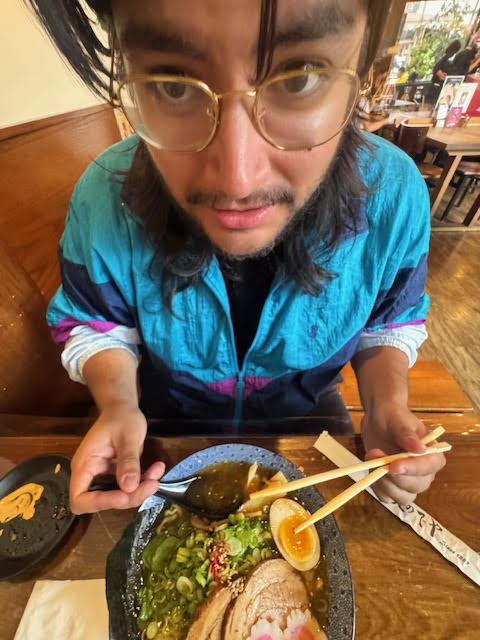

Hello my name is Marco Gonzales. I was born Febuary 13th, 2001 in the port city of Callao, Peru and immigrated here at the age of 4. Did a lot of moving around but now we are here. My interest in Design started back in high school after taking a digital arts class junior year and that interest grew more throughtout my years to the point where I want to make it my carreer. I originally wanted to do fully into graphic design but after taking classes and learning about the many routes desgin allows us to follow. I want to further learn techinques UI/UX as thats more foreign to my smooth groovless brain.